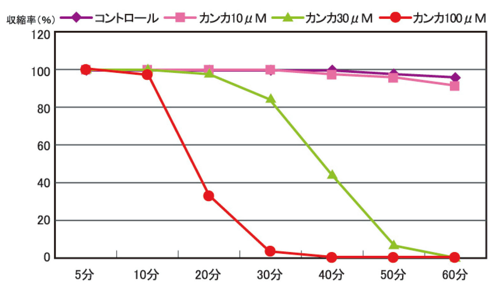

体質に合わせた食事
体質に合わせて痩せる食材が違う
栄養学の観点からみると、カロリー計算や糖質脂質過剰が肥満の原因とされていますが、 近年ドラッグストアなどで販売されている脂肪を減らすシリーズとして注目される医薬品原料は東洋医学をベースとする「植物由来」の生薬がメインです。 この成分の中でも東洋医学的に診断すると厳密には「太り方のタイプ」によって痩せる成分が違うと話すのは東北大学病院漢方内科医学博士の関隆志医師。 大きく分けて「肥満」には３タイプあり、【お腹冷えタイプ】【腰冷えタイプ】【ストレスタイプ】がありあす。 それぞれのタイプによってとると良い食材、効く生薬が異なり、まずは自分がどのタイプかチェックした上で、そのタイプにあった何の生薬の入っている医薬品・健康食品であることを確認することをお薦めします。

むくむタイプの人にお薦めな生薬
上記の3タイプすべてに言える症状として「むくみ」があります。 精神的なストレスでむくむのか、冷えでむくむのかに違いはありますが、そのむくみを流してくれる生薬と してタイプ共通で有効なのが、トウモロコシの穂からとれる「コーンシルク」と「ハトムギ」です。 むくみを感じやすい就寝前に服用することで、滞っていた水分を流す作用が期待できます。 ゼリータイプや顆粒タイプなど一般市販薬の成分表示で確認してみると良いでしょう。